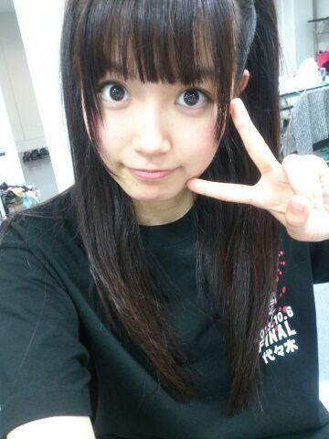
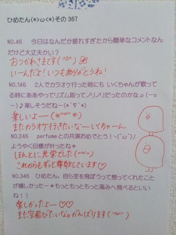

| 2014/02 22 Sat | ひめたん(*>ω<*)そ の410 |
季刊 乃木坂のメイキング映像が
公開されました！
みてみてー♪
https://www.youtube.com/watch?v=ziYzU9Rxcr4&feature=youtube_gdata_player
とゆーことで
きたる3月5日(日)
季刊 乃木坂vo.1 早春 発売！
メイキング見てくださったら
伝わるかなと思うけど
いつもの制服でも
ぴんくのふりふりでもなく
カジュアルな感じのお洋服よ(ノ)・ω・(ヾ)
景色もきれいだから
ひめたんのことあんま好きじゃないけど
すすきが大好きってんならそれでもいいから
ぜひお手に取ってみてね
よろしくねー♪♪

中３組
みーんな17さいになりました中３組。
お誕生日はみんなで
香り違いでお揃いのハンドクリームを
プレゼントしてみました( ^O^ )なかよし！
おーっと
明日はバースデーライブですね！
ヘアはいつもの高めくるくるツインに
しよーかなと思ってます
がんばって見つけてみてね☆
ひめたんもひめきゅんさんのこと
たくさん見つけます(ノ)・ω・(ヾ)
ひめたんTシャツとか着てくれたら
嬉しいなーなんて思ったり思わなかったり。
あっこれよく聞かれるけど
サイリウムはぴんくが好きです！
ひめたん上手か下手のどっちが多い？の答えは
どっちも立つし、言うなら
会場中 全部ちゃんとまわるよー( ^ω^ )ノ
それぞれの曲の
オリジナルのフォーメーションを
思い出していただければなと。
久々に見る曲もあると思うし
最近 乃木坂ちゃんを知ったよって方は
はじめて見る曲も多いかもしれないし
それぞれの楽しみ方ってあると思うけど
こうしてお誕生日に
みんなにお祝いしていただけるなんて
乃木坂ちゃんは幸せです(＊´ω`＊)♪
この1年間 本当に楽しかったよ！

代々木の時の写メ。
ライブTシャツってええですね(ノ)・ω・(ヾ)
はやいなあーもう半年くらい経ったのか......
今日は質問返しおやすみします
ごめんねー

(＊´・ω・＊)
コメント(316)
2014/02/22 00:30